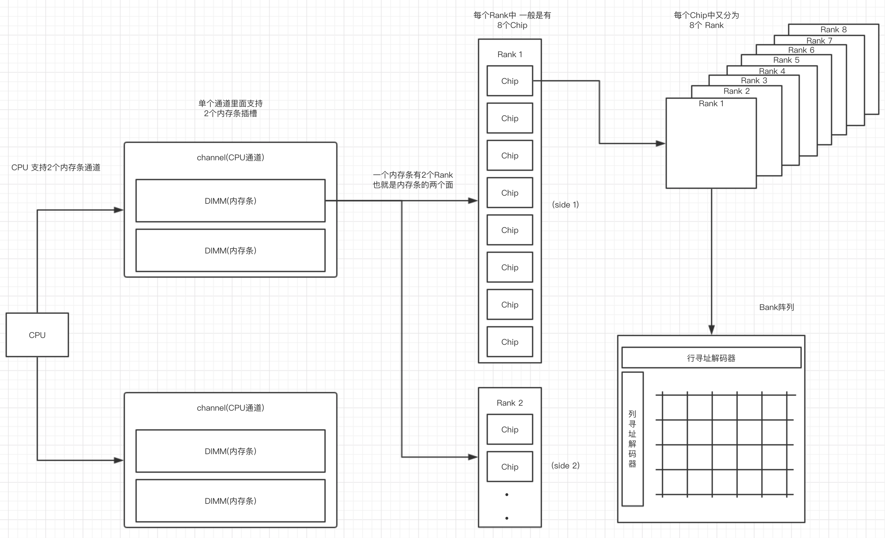
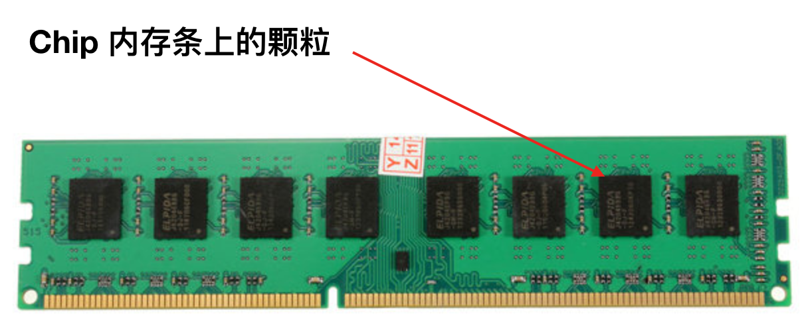
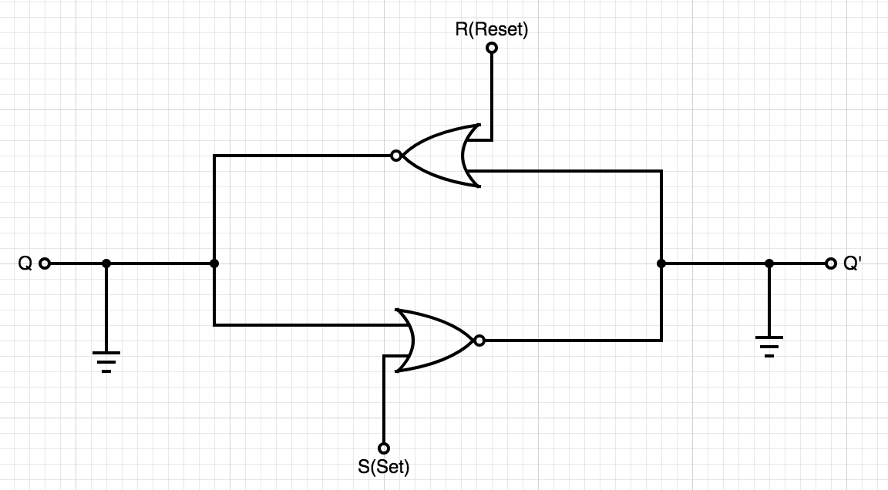
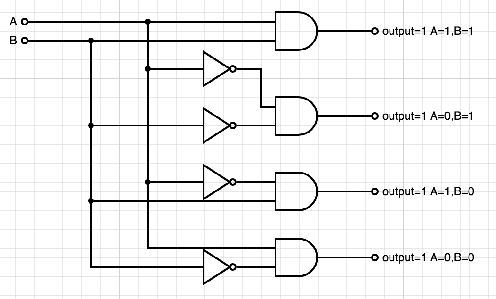

内存 的工作原理
内存一般是指 随机存取存储器 (英语 random access memory 缩写 RAM) ，用于存储CPU需要的数据，根据构造不同 有 静态 DRAM 动态 SRAM 之分，静态内存 只要通电就能保持数据 但是需要更多的晶体管，容量难以做大，动态内存可以通过一个晶体管和一个电容来实现一个bit的表示，在电路上简化了很多 可以将容量做大，缺点是 由于电容上的电荷容易丢失 需要不停的充电。
1 内部构造
内存的分层如下 Channel > DIMM > Rank -> Chip -> Bank -> Row/Col 可以参考下图

其中一个CPU支持两个通道 Channel 这个通道就是北桥芯片上的电路了，每个Channel 上支持两个 MIDD(内存条) 插槽，也就是说计算机总共支持插 2 X 2 = 4 个内存条。一个内存条上是分两个面的，这个面就是 Rank，每个面上会部署八个的黑色芯片颗粒 这个就是 Chip，如下图所示。

上面就是从内存条外观可以看到的结构，将Chip 展开 每个Chip的内部又是分层的 总共是分 8 个层，每个层都是一个阵列 每个点上就是一个电容与晶体管的组合体，这一个组合体构成了内存中的一个 bit 的表示 若电容不带电则表示 0 带电则表示 1。
2 电路实现
内存的电路实现有多种，这里只分析最简单的情况 旨在说明其原理。内存主要做数据的存储，且以二进制的形式表示 也就是可以使用一个表示高低电压的输出就可以了，在内存分层中 这样的一个存储位(bit)体现在的是 一个Bank层的存储矩阵中的一个点。内存实现的存储是通过晶体管实现的一个电路 门控D锁存器，其更简化的形式是 SR锁存器，电路结构如下图:

两个输入端 S(set) R(reset) 和两个输出端 Q 和 Q'，其工作原理是通过两个输入端的高低电平情况的组合，在输出端 产生不一样的结果。输入端分别接入到一个 或非 逻辑电路上，我们分析一下这个或非 真值表的规律
| S | R | (S OR R) | ^(S OR R) |
|---|---|---|---|
| 1 | 0 | 1 | 0 |
| 0 | 1 | 1 | 0 |
| 1 | 1 | 1 | 0 |
| 0 | 0 | 0 | 1 |
又上面的结果可看出规律，如果 S 或 R 中存在一个值是 1 的情况，逻辑门的输出相当于 0 ，然后结合电路图以及不同的输入组合对应产生的输出：
首先，电路中的 Q 与 Q’ 都是接地的 对应的都是低电平
1. S=0, R=1
R=1 R对应高电平 则 R 对应晶体管的输出是低电平，S=0 S对应低电平 则 S 对应晶体管的输出是高电平，这样电流 到达 Q‘ 的是高电平 Q’=1 到达 Q 的是低电平 Q=0
最终结果: S=0,R=1,Q=0,Q’=1
2. S=1, R=0
R=0 R对应的是低电平 则 R 对应晶体管的输出为高电平，S=1 S对应高电平 则 S 对应晶体管最终输出低电平，这样电流到达 Q 的是高电平 Q = 1 到达 Q‘ 的是低电平 Q’=0
最终结果: S=1,R=0,Q=1,Q’=0
3. S=1, R=1
S=1,R=1 这样对应的两个晶体管的输出都是低电平 对于 接地的 Q Q' 是没有任何影响
最终结果: S=1,R=1,Q,Q’不变
4. S=0, R=0
S=0,R=0 这样两个对应的晶体管都输出高电平 也就是 Q Q' 都是高电平，当输入电流增加的时候 Q Q' 的高电平就会失去平衡，达到一个高一个低的电平情况，这个又取决于先增加哪个输入的电流，对于这样的情况 在电路的设计中是避免掉的。
由上面的结果可知，当R S 都是 0 (低电平) Q保持其值不变，当S=1 R=0 此时Q=1 ，当S=0 R=1 此时Q=0，内存存储阵列中的一个位 bit 也是用 这里的 Q 来表示 0 1 的。这里的两个输入 S = set 是对这个bit设置值 R = Reset 是将这个位的值还原为0。
上面的情况 当 S = R = 0 的情况是要在电路中避免的，这可以增加一个输入信号来控制是否可读的信号，这个输入分别与 S R 输入连接到两个 且 逻辑门上，这样就形成了一个 门控D锁存器。
3 寻址过程
- 通过寻址信号 S01# S02# 确定
Rank内存的哪个面 - 通过Bank地址 BA0-BA3(2^3 = 8) 确定Bank的哪个层 也就是哪个 存储矩阵
- 列选 CAS# 表示要接收的地址编号是列地址 与 地址线配合使用
- 行选 RAS# 表示要接收的地址编号是行地址 与 地址线配合使用
- 地址线 A0 - A13 用于行列的地址选择
- 数据总线 DQ0 - DQ63 传输数据 总共可以传输 64bit数据
- 命令 COMMAND 传输对内存的操作方式 读或写
这并没有对 内存颗粒（Chip） 的选址过程，内存在选片之后是对 8 个 Chip 一起选中使用的，确定Bank层 、行地址 、列地址 这些选址信息后 这些信息会同时应用到 8 内存颗粒上的。
行列的选址过程：
行选择 行选高电平 列选低电平 地址线发送地址信息 这时接收到的地址是 行地址
列选择 列选高电平 行选低电平 地址线发送地址信息 这时接收到的地址是 列地址
然后就是根据COMMAND 确定读写操作 然后数据通过数据总线写入或读出
在行列地址选择的时候还有一个行列地址的译码过程，我们的地址线是 A0 - A13 是14根电路，这个时候能表示的地址情况有 2^14 这是在行/列的译码器中实现的，解码器的电路如下:

关于 寻址能力 与 寻址空间。
寻址能力 是指内存的存储单元 目前常用的内存寻址能力都是 8bit 这也就是说 在内存的存储矩阵中，8个 门控D锁存器 组成内存的基本（最小）存储单元，他们共用一个行/列 地址线。在一次寻址中每个内存颗粒返回 8 bit的数据 8个内存可以同时寻址 最终得到的是 8 * 8 = 64 bit 的数据 也就是说 内存一次寻址可以读取 8 Byte 的数据，这里也能说明在C语言中的内存不齐的原因(减少寻址次数)。
寻址空间 是指内存总共可以存储多少个地址，比如一个2G 内存 ，每个Rank是2/1=1G ，每个内存颗粒是1/8=128M 每个Bank是 128/8=16M 16M = 2^4 * 2^10 = 2^14 也就是地址线需要14根 正对应地址线的 A0-A13